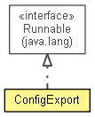

org.waarp.openr66.server
Class ConfigExport
java.lang.Object
 org.waarp.openr66.server.ConfigExport
org.waarp.openr66.server.ConfigExport
- All Implemented Interfaces:
- Runnable
public class ConfigExport
- extends Object
- implements Runnable

Config Export from a local client without database connection
- Author:
- Frederic Bregier
|
Method Summary |
protected static boolean |
getParams(String[] args)
|
static void |
main(String[] args)
|
void |
run()
Prior to call this method, the pipeline and NetworkTransaction must have been initialized. |
| Methods inherited from class java.lang.Object |
clone, equals, finalize, getClass, hashCode, notify, notifyAll, toString, wait, wait, wait |
future
protected final R66Future future
host
protected final boolean host
rule
protected final boolean rule
networkTransaction
protected final NetworkTransaction networkTransaction
shost
protected static boolean shost
srule
protected static boolean srule
ConfigExport
public ConfigExport(R66Future future,
boolean host,
boolean rule,
NetworkTransaction networkTransaction)
run
public void run()
- Prior to call this method, the pipeline and NetworkTransaction must have been initialized. It
is the responsibility of the caller to finish all network resources.
- Specified by:
run in interface Runnable
getParams
protected static boolean getParams(String[] args)
main
public static void main(String[] args)
Copyright © 2009-2012 Waarp. All Rights Reserved.